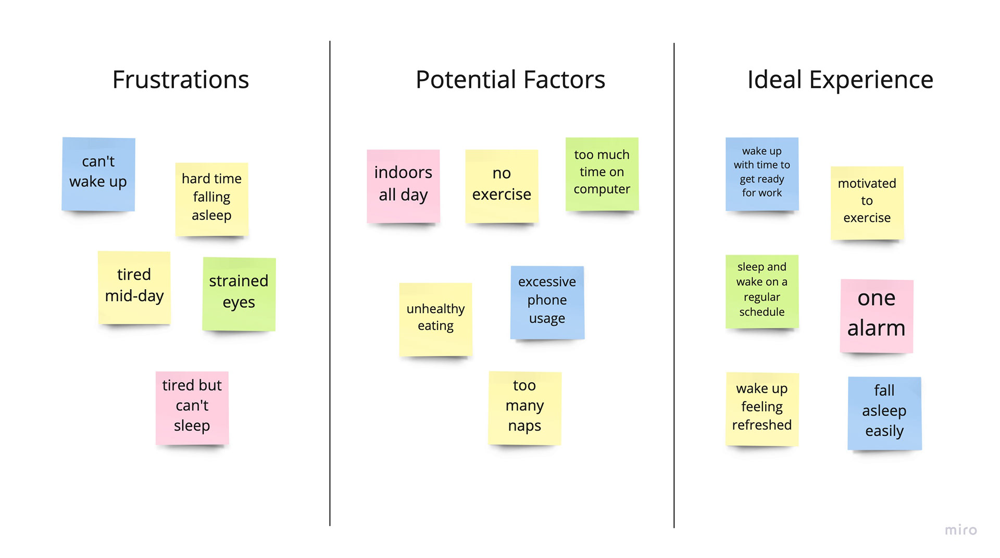
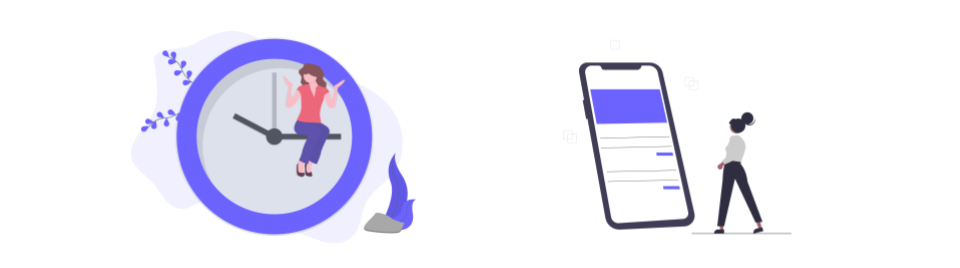
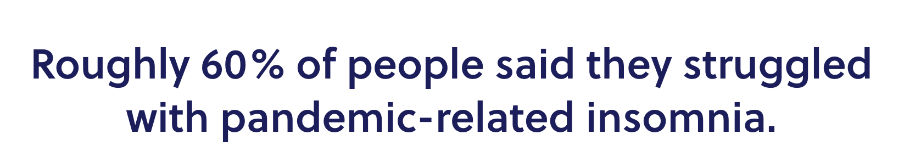
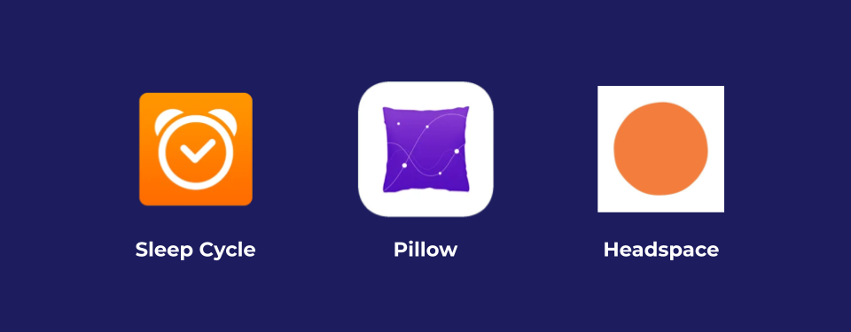
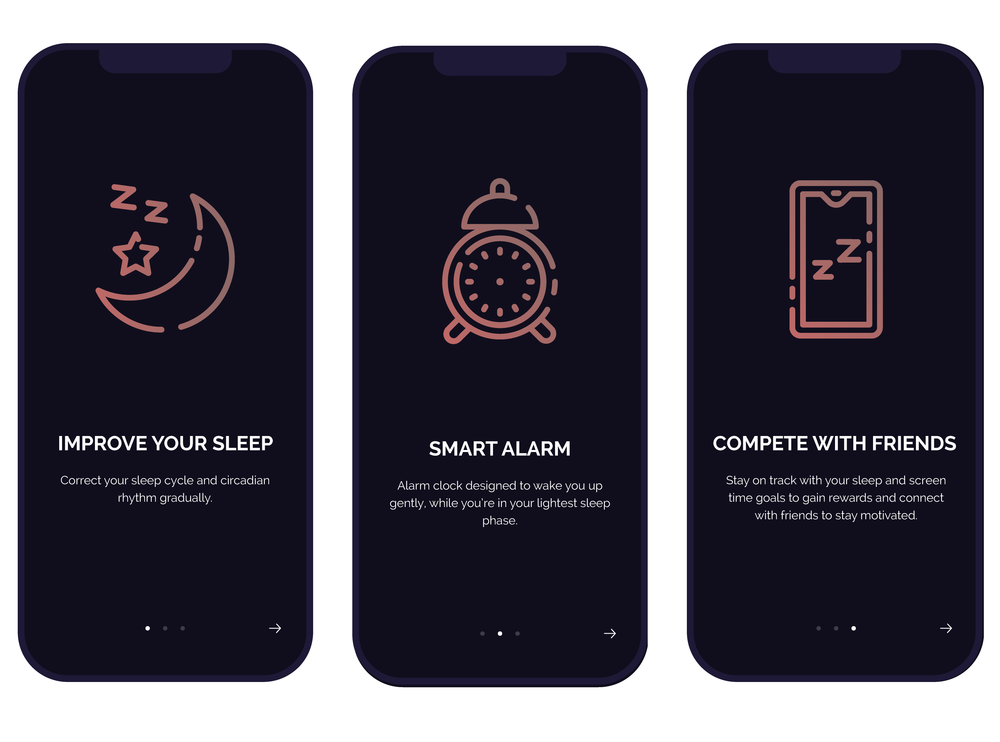
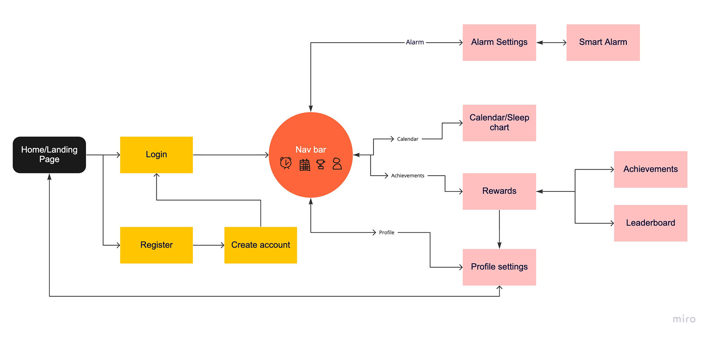
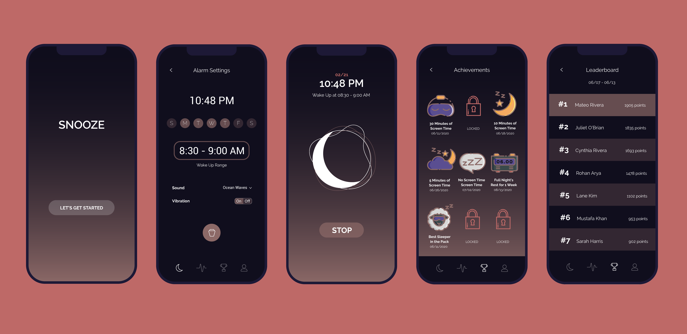

Snooze
Sleep Correction & Smart Alarm App
-
Role:
-
UX/UI Design
Prototyping
User Research
-
Category:
-
Personal Project
-
Timeline:
-
4 weeks
-
Tools Used:
-
Adobe Illustrator
Figma
Miro
Role: UX/UI Design, Prototyping, Research
Category: Personal Project
Timeline: 4 weeks
Tools Used: Illustrator, Figma, Miro
Overview
I set out to create a mobile application that would help people better understand their sleep patterns and to help monitor and realign their sleep cycles.
Problem
The COVID-19 pandemic and the shift to remote work have resulted in people spending longer periods at home and feeling isolated. This has led to widespread reports of increased stress, anxiety, and declining sleep quality. In particular, the long-term effects of the pandemic have disrupted sleep patterns and negatively impacted overall well-being.

The User
User Interviews
I interviewed 10 potential users: 5 college students and 5 working adults who all self-identified as having sleep problems that began during quarantine.
From their responses, I compiled a list of the main frustrations, potential causes, and ideal experiences shared between the interviewees.
Overall what I learned was that a majority of people were having a hard time falling asleep and because of that, a hard time waking up. Out of all the possible factors my interviewees listed for these problems, the most
relevant and interesting were: being indoors all day and excessive technology and screen usage. The unanimous response from the interviewees when asked what about their ideal experience was that they would like to be more motivated
and be able to sleep and wake with ease.

User Pain Points
1. A Disrupted Circadian Rhythm:
Most people attending school and/or working in remote or hybrid conditions are required to spend most of their whole day in the same place and indoors.
Not being able to experience the rising and setting of the sun affects our body's
natural responses to light, which leads to a disrupted circadian rhythm… our body’s internal clock.
2. Excess Screen Time:
Post-pandemic conditions have resulted in increased stress, anxiety, and even depression for many people.
In turn, this has led to more screen time as a way to connect with the outside world or escape from reality, in addition
to the demands of remote work.

Research
My main method of research was analyzing online studies and surveying my peers, who I thought would be a good initial sample. There are lots of factors that can lead to improper sleep, things that were prevalent even before the pandemic and quarantine took place.
White Paper Research
Although information about the consequences of the pandemic were hard to find because everything was so new at the time, I did manage to find some online research articles about its effect on sleep.

Through my research, I found that many people did indeed struggle with pandemic-related insomnia. Individuals who were experiencing high levels of loneliness during the pandemic were more prone to feel anxious, and their
sense of loneliness prompted excessive social media use. As you may know, this leads to a larger intake of blue-light which correlates with restless sleep.
(The AASM surveyed 2,006 adults in the U.S., those aged 35-44 had the highest rate of COVID-somnia sleep disturbances at 70%)
Competitive Analysis
There are currently an endless amount of sleep related apps on the market that are targeted at many different things.
Some like Sleep Cycle and Pillow use a smart alarm that tracks your sleep either from your breathing or from monitoring your pulse using an apple watch, and uses the information to gently
wake you up during your lightest sleep phase. This is supposed to wake users in a way that makes them feel more energetic and ready for the day.
Others use white noise or peaceful sounds to put the user to sleep, and Headspace - although not necessarily marketed as a sleep app, uses meditation to calm its users, and in turn help them achieve better
sleep.

Solution
Snooze is a smart alarm and sleep correction app that “gamifies” the user experience. After much deliberation and feedback from those around me, I came to the conclusion that adults don’t necessarily need an app that forcefully tells
them what to do, and instead something to encourage them and make the experience more enjoyable.
In order to provide a sense of community and connectivity, I created a feature that allows users to compete with friends. This will give people the opportunity to keep their friends and family in mind, while also creating
a sense of solidarity while people adjust and struggle with their sleep.

onboarding interfaces
User Flow
This is the sketch of the workflow used to determine the users' complete experience of the app and successfully map their complete journey while using the app.

User Interfaces

Hi-Fi Prototype
This run-through was created using Figma in order to test the functionality
and interactivity of the app.
Try it for yourself!
Takeaways
This project has given me a lot of insights into the importance of sleeping patterns and all the effects it can have on a person's life. The importance of maintaining your sleep cycle and getting needed rest is something many people,
especially college students, take for granted.
I would love to come back to this project and go even further in-depth on the research aspect of it to create and adjust the features I designed and included to make them even more beneficial to users. I would also like
to potentially get some user-testing done to see if there are any aspects to this app that I missed and could have included, like a resource section. Sleep issues are something people suffered with even before the pandemic and
quarantine so I feel like this idea is applicable both now and in the future.